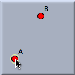
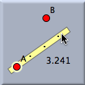
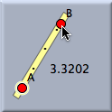
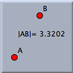

Distance

- Move the mouse pointer over the first point and press it.
- Drag the mouse, with the left button pressed, to the second point. While you drag, a ruler with the actual distance from the first point to the mouse pointer is shown.
- The ruler snaps to selected points. When the second point is selected, you can release the mouse button.
 |  |  |  | |||
| Mouse press: A point is selected. | Mouse drag: A ruler is displayed. | Mouse drag: Second point selected. | Mouse released: Measurement added. |
Synopsis
Measure the distance between two points with a press–drag–release sequence.
Caution
The definition of distance changes with the type of geometry (Euclidean, hyperbolic, or elliptic). In hyperbolic geometry, distances may even be complex numbers.
Page last modified on Thursday 28 of July, 2011 [08:48:56 UTC].
The original document is available at
http://doc.cinderella.de/tiki-index.php?page=Distance